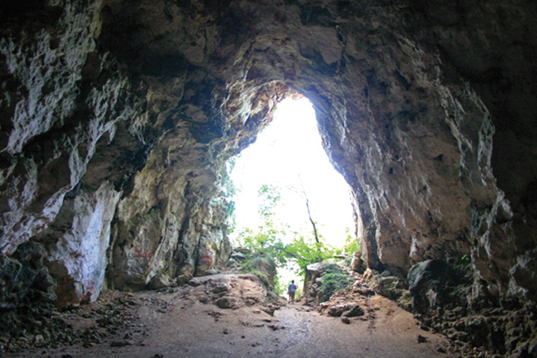

Es Migjorn Gran, tranquil and accommodating
 How true: Es Migjorn Gran is a tranquil and accommodating town. Its inhabitants are good natured and pleasant. The streets and squares demonstrate the enchantment of a place that is agreeable to stroll through, admiring the houses, shops, gardens, buildings... or children happily playing outside.
How true: Es Migjorn Gran is a tranquil and accommodating town. Its inhabitants are good natured and pleasant. The streets and squares demonstrate the enchantment of a place that is agreeable to stroll through, admiring the houses, shops, gardens, buildings... or children happily playing outside.
The most notable building in town is the parish church, situated in the centre, sharing the square with the town hall and a bank.
Es Migjorn Gran is off the beaten track of the main artery of the island that unites Mahón and Ciutadella, passing successively for Alaior, Mercadal and Ferreries. Es Migjorn Gran has three accesses from the main road, between Alaior and Mercadal; or directly from Mercadal or Ferreries.
Maybe being situated away from the main route in Menorca, helps to magnify the particular character and the idiosyncrasies of the town and, above all, its people.
 The town with just over one thousand five hundred citizens, has a duality of being small - and, at the same time has a lot of services: its own town hall, excellent beaches - about five minutes away by car, a health centre, a state school (for children up to twelve years old) one for infants (0 to 3 years old), a day centre for senior citizens, chemist, taxi service, a sporting area with a football pitch, tennis courts, sports stadium, gym, football 7, flag rugby... together with an ample offer of shops (including two bakers, two butchers, and two supermarkets) bars and restaurants; also a hostel and a rural hotel. On the outskirts the town has a small industrial zone, where most of the businesses are situated, carpenters, mechanics, coaches and minibuses, shoe factory, iron mongers, transport companies, builders, painters, plumbers, electricians…
The town with just over one thousand five hundred citizens, has a duality of being small - and, at the same time has a lot of services: its own town hall, excellent beaches - about five minutes away by car, a health centre, a state school (for children up to twelve years old) one for infants (0 to 3 years old), a day centre for senior citizens, chemist, taxi service, a sporting area with a football pitch, tennis courts, sports stadium, gym, football 7, flag rugby... together with an ample offer of shops (including two bakers, two butchers, and two supermarkets) bars and restaurants; also a hostel and a rural hotel. On the outskirts the town has a small industrial zone, where most of the businesses are situated, carpenters, mechanics, coaches and minibuses, shoe factory, iron mongers, transport companies, builders, painters, plumbers, electricians…
There are also a large number of associations considering the population of 1.500. Friends of Art, Municipal Band, Cultural Association, Sports Club, Senior Citizens Club, Parents Association for school children, Folk Group, Equitation Club, Agility Club etc.
The municipality of Es Migjorn Gran partly occupies the centre in the south of the island. The town was born 250 years ago at the wish of the dwellers in the area and was converted into an independent municipality in 1989, 25 years ago.
Although the primary sector statistically is distanced from the secondary and above all, the tertiary, Es Migjorn continues to have several working farms that help with the conservation of both rural and agricultural countryside.
Apart from the historic streets in the town centre, the locality has grown over the last 40 years with the building of Plaza Menorca, Plaza Maestro Andreu Ferrer, Avenida Binicudrell, Avenida de la Mar, Avenida David Russell, etc.
Es Migjorn Gran is renowned throughout Menorca for the high standard of its music. More than half of the children of school age go to the Municipal Music School and there is the much admired Municipal Band that is famous throughout the island; also the church choir, another choir, several musical groups, The Cornet and Drum Band, etc. The great artist of the classical guitar David Russell spent all his childhood in the town.
We will finish the review of Es Migjorn Gran pointing out its strong points, the talayotic monuments and the beaches.
Es Migjorn is the municipality on the island with the highest density of megalithic monuments. Worth mentioning are the two talaiots at Binicudrell, situated between the Francesc d´Albranca and the cemetery; the one in the Santa Mónica farm; the Sant Agustí Vell settlement; the hypostyle chamber at Binigaus Nou….and a very long etc.
As far as beaches are concerned the municipality has seven, only one of which, Santo Tomás is urbanized. So apart from this tourist area we can also enjoy Atalis, (situated to the east) San Adeodato, Binigaus, Cala Escorxada, Cala Fustam and Trebalúger. Santo Tomás has an extensive offer, which includes residential areas, hotels, bars and restaurants, and has a lovely promenade. It also has medical services for six months and a chemist all the year round.
Finally in the place of honour is the frequently visited Cova des Coloms, (The cave of pigeons), in the Binigaus valley. This is a natural grotto of unusual dimensions. 110 metres long, 15 wide, and... 24 high! This is why it is often referred to as the cathedral. The cave is encrusted in the eastern cliff of the valley. The access to this magna cavern nowadays is well signposted.
To sum up, to visit and get to know Es Migjorn Gran is synonymous with having contact with a lively, dynamic town which is at once traditional and modern. It is definitely an authentic town!